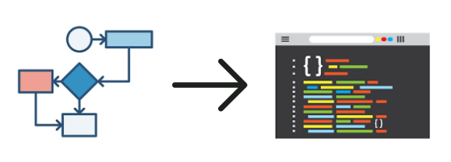

Marcos Vinícius - AI-APW-01
Antes de podermos entender a diferença entre algoritmo e programa, temos que compreender os dois individualmente. Um algoritmo é uma sequência de instruções a fim de realizar um objetivo. Um programa é um conjunto de comandos estruturados em uma linguagem de programação que serão lidos pela máquina.
Tendo isto em mente, podemos dizer que a diferença entre um algoritmo e um programa é
que o algoritmo é usado na criação de um programa, afinal o algoritmo é apenas a série de
instruções, que pode se aplicar a várias coisas no geral, especialmente na nossas ações na vida
real, sendo algo mais mental. Enquanto o programa, escrito em linguagem de programação, que é
uma forma escrever um algoritmo, será compilado para que a máquina possa ler e executar seus
comandos codificados. O algoritmo é o ingrediente e o programa é o produto.
